Быстрый старт
Чтобы данные с приборов появились в облаке, достаточно сделать четыре шага. Остальное можно настроить позже.
1. Войти в кабинет
- Откройте relsibcloud.com — зарегистрируйтесь или войдите.
- Откроется кабинет. Слева — меню: Контроль, Объекты, Приборы и другие разделы.
2. Создать раздел, объект и зону
Откройте Объекты. Нужны три уровня: где площадка → куда подключается шлюз → где стоит датчик.
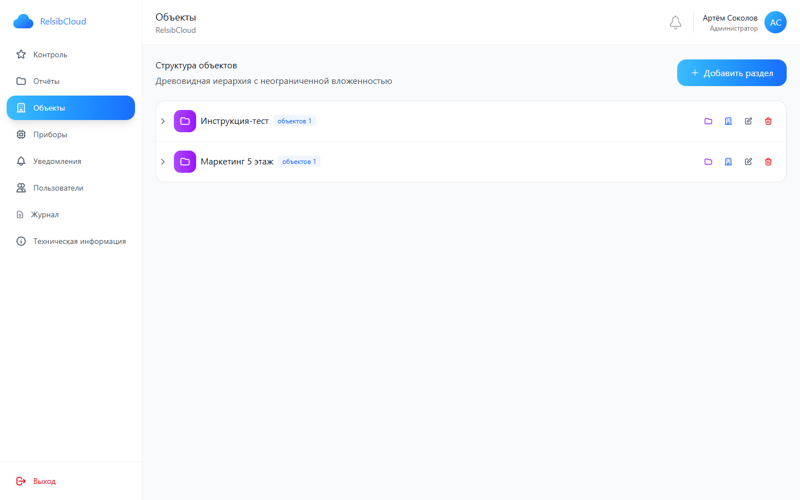
Раздел
- Нажмите + Добавить раздел.
- Укажите название (например, «Офис» или «Склад») → Сохранить.
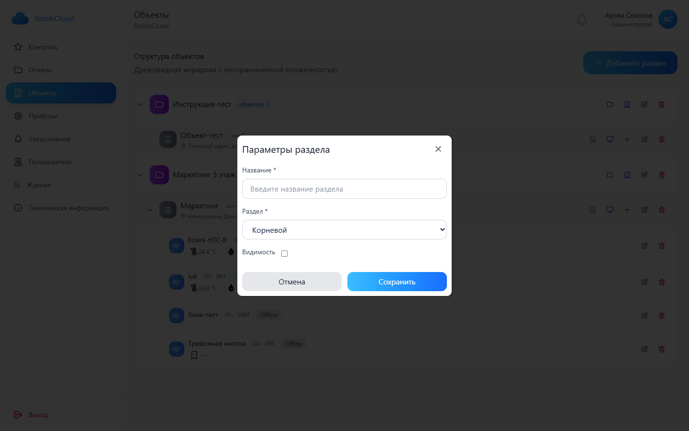
Объект
Объект — точка подключения шлюза. У него будут логин и пароль для связи с облаком.
- В строке раздела нажмите иконку «Добавить объект».
- Заполните название, адрес и часовой пояс (обязательно) → Сохранить.
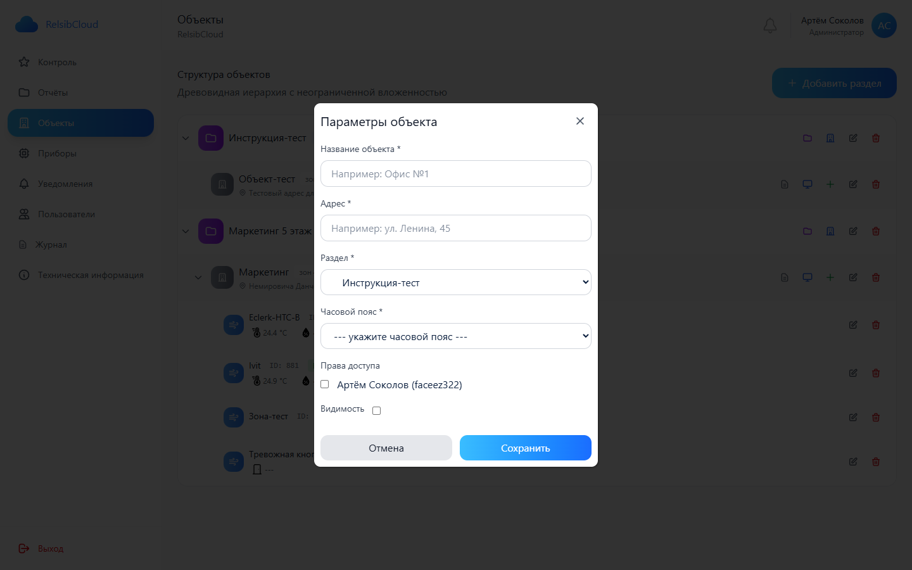
Зона
Зона — место измерения (комната, холодильник, точка с датчиком). История данных хранится на зоне.
- Раскройте раздел, найдите объект.
- Нажмите зелёный «+» — Добавить зону.
- Укажите название → Сохранить.
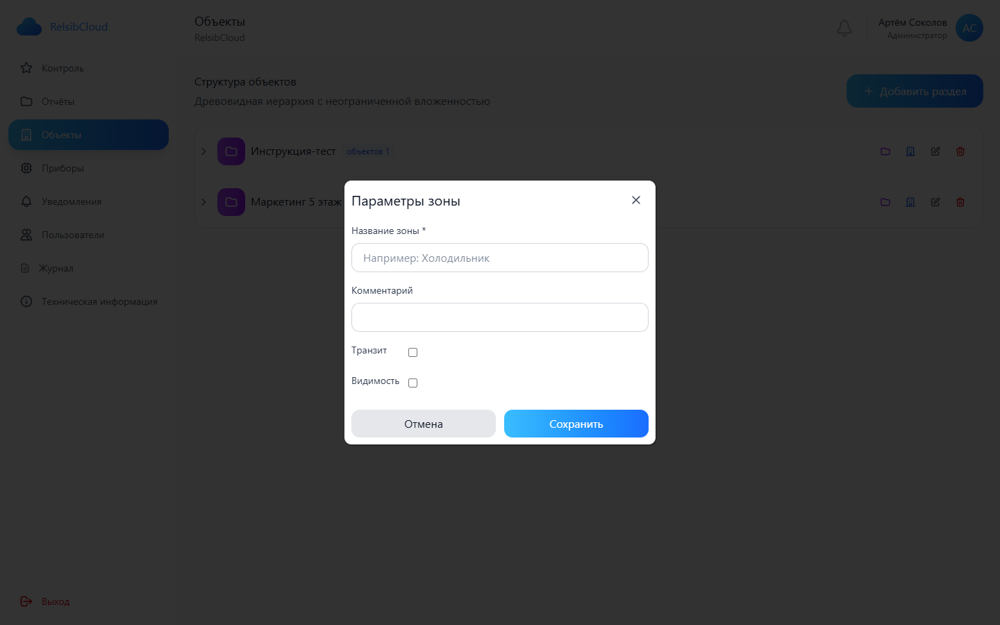
3. Подключить шлюз или приложение
В строке объекта нажмите первую иконку — «Информация для подключения».
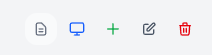
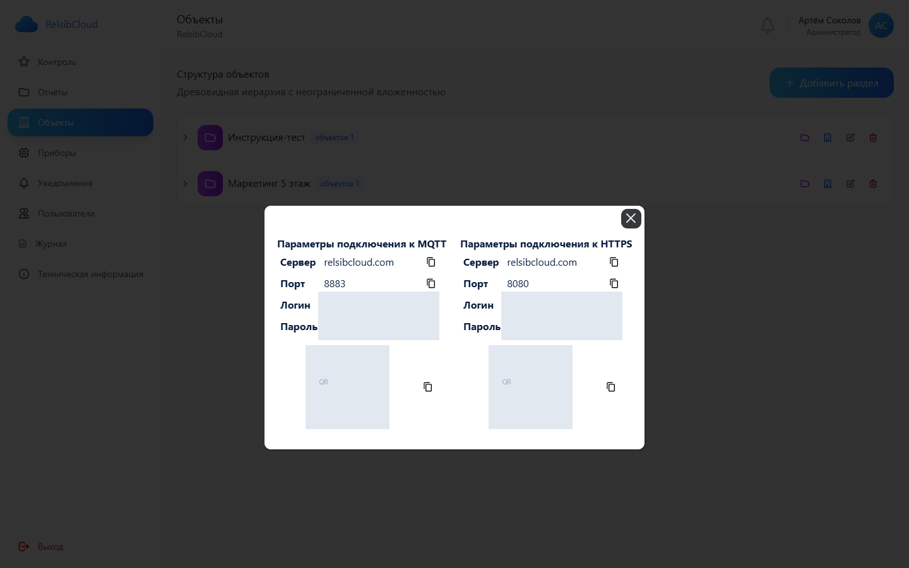
- Скопируйте логин и пароль объекта (или отсканируйте QR).
- Введите их в шлюз GW / приложение EClerk-WM / настройки прибора Wi‑Fi или LTE.
- MQTT: сервер
relsibcloud.com, порт 8883. HTTPS: порт 8080. - Подробнее по мобильному приложению — в инструкции EClerk-WM.
4. Проверить, что приборы подключены
После настройки шлюза откройте Приборы — там появятся устройства и их статус (онлайн / офлайн). Так проще всего убедиться, что связь с облаком есть.
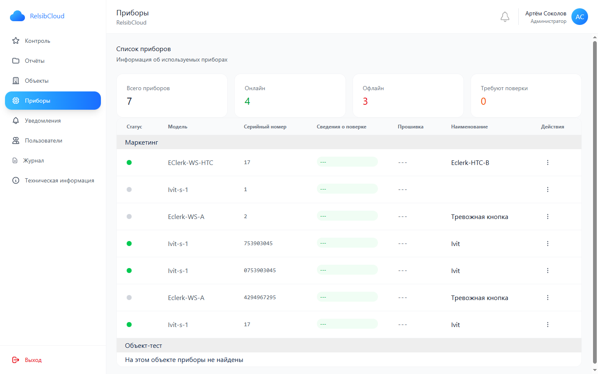
- Откройте Приборы.
- Проверьте, что нужные устройства в списке и в статусе онлайн.
- Текущие показания также видны в дереве Объектов у соответствующих зон.
Контроль — не полный список всех зон. Туда попадают только зоны из избранного: когда зон много, на экран выводят самые нужные. Чтобы зона появилась в Контроле, добавьте её в избранное.
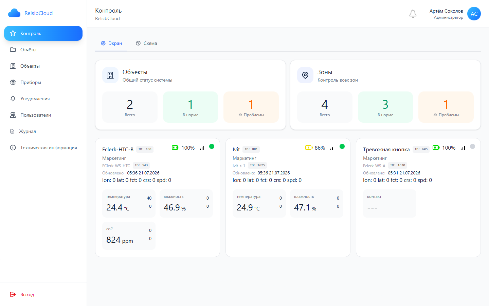
На этом базовый запуск закончен: объект создан, шлюз подключён, приборы видны в списке.
Что настроить дальше
Когда первые приборы уже отдают данные, удобно сразу включить оповещения и посмотреть отчёты.
Уведомления
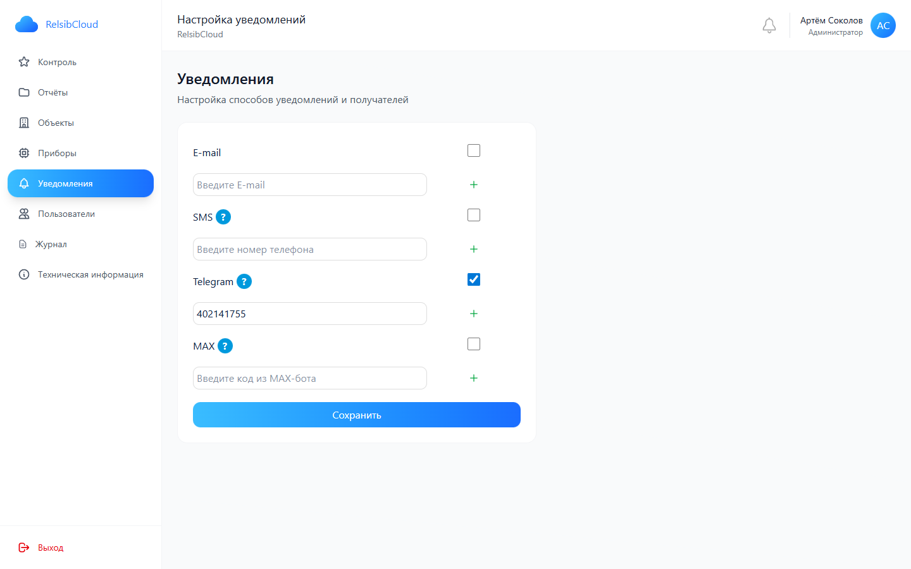
- Откройте Уведомления.
- Включите канал и укажите адрес, телефон или код бота → Сохранить.
Отчёты
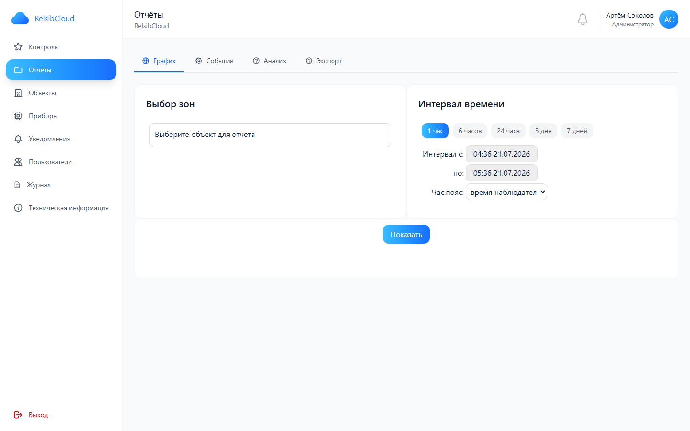
- Откройте Отчёты → выберите зоны и интервал → Показать.
Подробнее по кабинету
Ниже — когда базовый запуск уже сделан и нужно разобраться глубже.
Как устроено дерево
- Раздел — группа (филиал, этаж, площадка). Можно вкладывать разделы друг в друга.
- Объект — точка подключения шлюза: адрес, часовой пояс, права доступа, логин/пароль.
- Зона — место измерения. Данные хранятся на зоне: при замене датчика история не пропадает.
Иконки объекта
- документ — информация для подключения шлюза;
- монитор — дашборд объекта;
- «+» — добавить зону;
- карандаш — редактировать объект;
- корзина — удалить объект.
У раздела иконки другие: добавить подраздел, добавить объект, редактировать, удалить.
Дашборд объекта
Синий монитор открывает карточку объекта со всеми зонами.
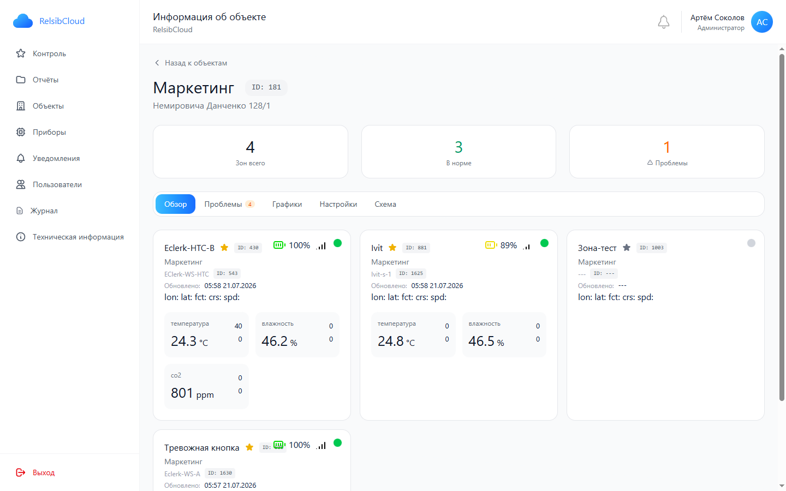
- Обзор — карточки зон (температура, влажность, CO₂, батарея, сигнал).
- Проблемы — зоны с отклонениями.
- Графики — история измерений.
- Настройки — параметры объекта.
- Схема — показания на плане или фото.
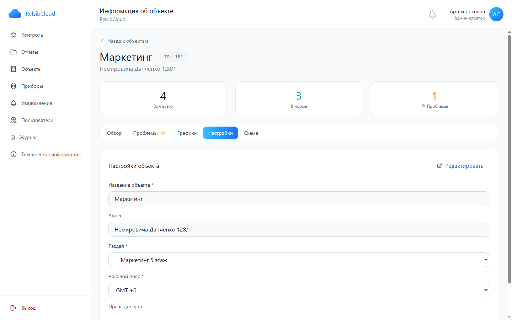
Редактирование объекта и зоны
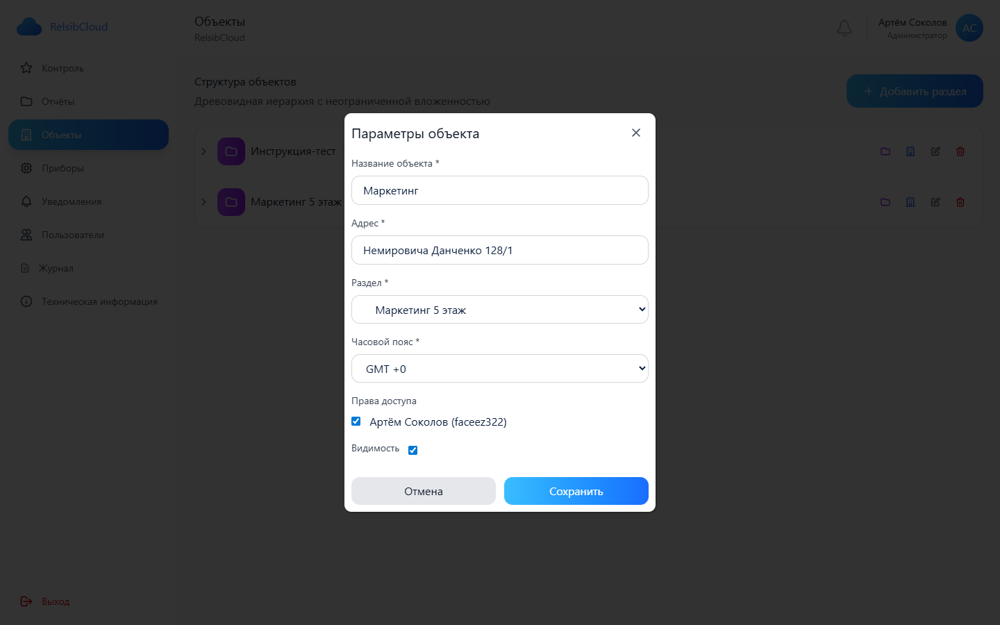
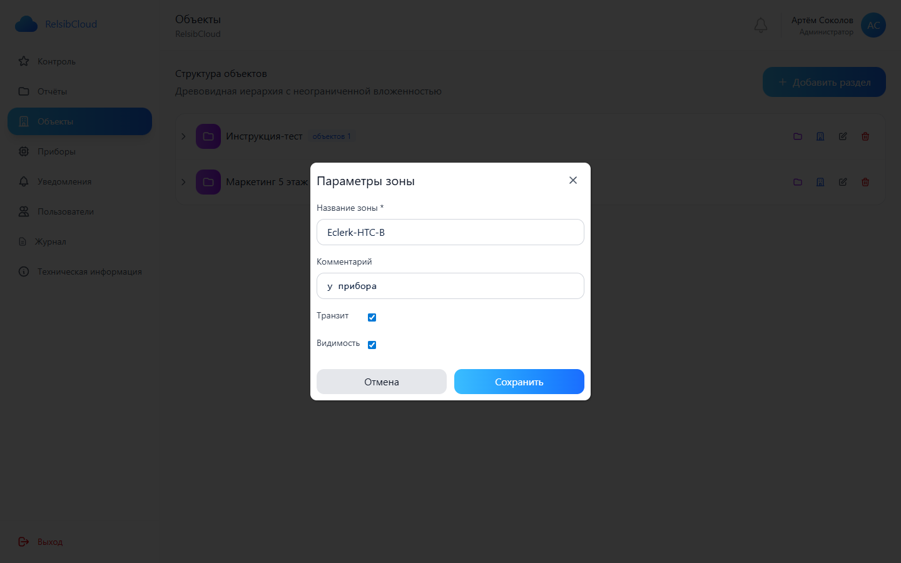
- Карандаш у объекта или зоны открывает форму параметров.
- В зоне можно уточнить комментарий и видимость в Контроле.
Контроль: экран и схема
В Контроле показываются только зоны из избранного — удобный экран для самых важных точек, а не для всего списка зон.
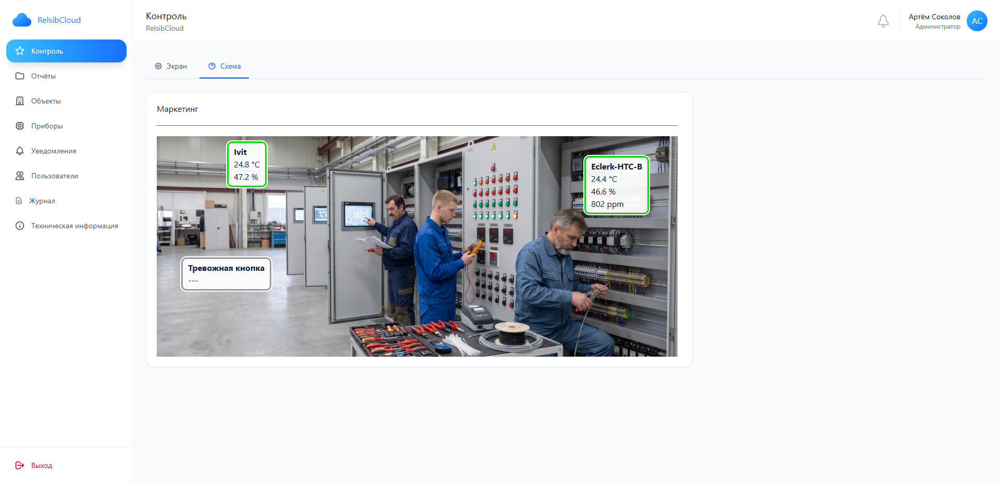
- Экран — карточки избранных зон.
- Схема — те же данные на плане или фото.
- Чтобы проверить, что приборы вообще подключились, смотрите раздел Приборы.
Пользователи
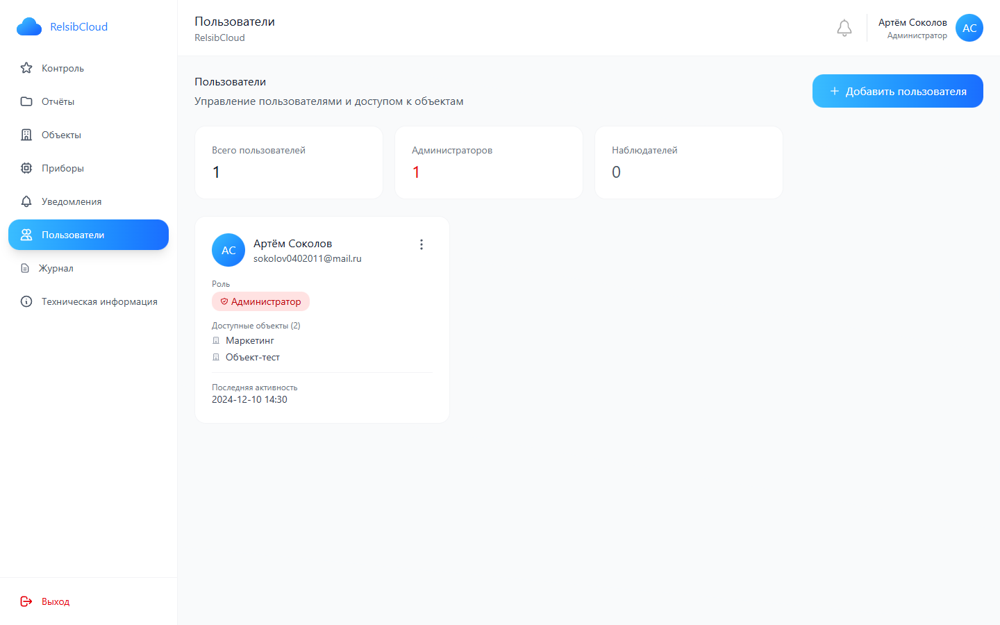
- Пользователи → + Добавить пользователя.
- Назначьте роль и объекты, к которым есть доступ.
Журнал
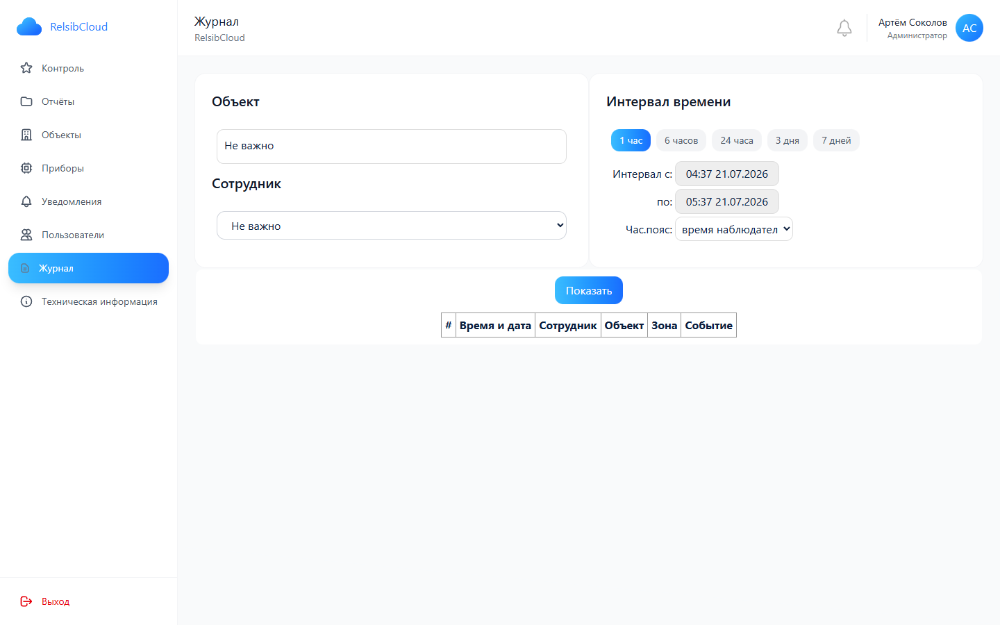
- Выберите объект, сотрудника и интервал → Показать.